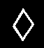

![[IMAGE]](./rune/b_rune.gif) "Bell"
"Bell"
"Bell"
This is the symbol for the "b" sound. Bells have great significance in Skaven religion and magic. They are often fashioned to resonate at a precise pitch capable of focusing warp energy. See Skaven army book, page 41 (heavy Metal) on Screaming Bell Miniature.
"Council of Thirteen" "The Gathering of Clans", or "Clanrats"
This elaborate design on the left is the symbol for the Council of Thirteen. It is also used to represent the capital letter "C". See Skaven army book, page 49 ('Eavy Metal pages), on Screaming Bell miniature.
The symbol on the right, three over-lapping lines forming an inverted triangle followed by a series of overlapping lines below it of descending size represents the joining together of two or more skaven clans for a common cause. It is often found adorning the standards of mobs of Skaven of more than one clan, collectively known as Clanrats. See Clanrat banners, Skaven army book page 49, ('Eavy Metal).
"Dwarf"
A double triangle facing left. This is the symbol for "Dwarf" and was adopted from the Dwarven rune for the letter "D", following the fall of Karak Eight Peaks in -c513 (Now known as the Skaven "City of Pillars"). It is used as the Skaven letter "D".
"Fellblade"
This is the symbol for the dreaded Fellblade. It is also used generically to commemorate the defeat of Nagash in -c1200. Although Skaven do not formally bury their dead, they have been known to place this symbol over the bones of fallen comrades to ward off Necromancers. The symbol is seldom used otherwise, unless in its letter-form, where it is given the sound of "F".

![[IMAGE]](./rune/g2_rune.gif)
These symbols are used to represent Warlocks and Seers. A single diamond with no adornment represents a Warlock Engineer. A stem is added for a Warlock Champion. A stem and a single scratch mark signify a Warlock Master, while a stem with two scratch marks is the basis for a Grey Seer's blazon. Individual Warlocks and Seers generally add additional adornments to these basis shapes. Note, however, that Warlocks and Seers never use a "horn" on their runes, as would be the case with a Vermin Lord's runic symbol, or "V". The Grey Seer's symbol represents the sound of the letter "G". The other symbols do not appear to have sounds associated with them. See Skaven army book, page 69 far right, page 70 far left, Grey Seer's cloak on book cover.
![[IMAGE]](./rune/h_rune.gif) "Horned Rat"
"Horned Rat"
A diamond with a horn-like extensions forms the symbol for the Horned Rat as well as the "H" sound. See Skaven army book, page 60, center rune (with vowels).
![[IMAGE]](./rune/j_rune.gif) "Warp energy"
"Warp energy"
This symbol represents the machinations of Clan Skryre and all warpstone devices, particularly the Jezzail. It therefore has the sound of the letter "J". See Skaven army book, page 60, second rune from the left.
"Skryre" ("wheel")
The three spoked pin-wheel has been adopted as the symbol for Clan Skryre. When used as a letter it has the sound of "K". See Skaven army book, page 70, center rune, Doomwheel banner.
 "Warlord"
"Warlord"
A Scratch mark leading into a solid line with a second gouge below it. This is the symbol of a Skaven Lord, and is given the same sound as the letter "L".
![[IMAGE]](./rune/m1_rune.gif) "Moulder"
"Moulder"
![[IMAGE]](./rune/m2_rune.gif) "Moulder"
"Moulder"
A fist holding a whip. This symbol is often drawn runically as a simple series of lines forming a spiral. It is the symbol of Clan Moulder, and is used to represent the letter "M". The more elaborate symbol to the right usually adorns shields and banners of the clan, as well as the gates to the Hell Pit. See Skaven army book, pages 11 and 72.
![[IMAGE]](./rune/n_rune.gif) "Eshin"
"Eshin"
A small darkened pyramid over a pair of elongated darkened and inverted triangles forms the runic symbol of Clan Eshin. Is it the stylistic equivalent of the clan's "dagger in hand" glyph, which is painted in a glowing mixture of blood and warpstone on the clan's stronghold in Cathay. The Symbol has the sound of the letter "N". See Skaven army book, pages 16 and 60, rune on far right, Skaven army book cover.
![[IMAGE]](./rune/p_rune.gif) "Pestilens"
"Pestilens"
A vertical line with a triangle on the top half, facing right. Similar to the letter "P" in appearance, this simple symbol is used by Clan Pestilens and has the same sound as the letter "P".
![[IMAGE]](./rune/q_rune.gif) "Queek"("Mine!")
"Queek"("Mine!")
This symbol is usually drawn on objects to denote their ownership. It is believed that the particular scent given off by each Skaven's fingernails in scratching this symbol on their possessions places other Skaven on notice of the owner's claim. The symbol has the sound of the letter "Q", for the skaven word "queek", which loosely translates into the word "mine." See Skaven army book, page 69, third from left, page 70 (and the heads and hind quarters of numerous rat ogres and slaves).
"Red Pox"
This symbol is used to evoke the inevitable victory of the Children of the Horned Rat. It is thus no coincidence that it was first used by Clan Pestilens to mark cities infected with the "red pox." It has the sound of the letter "R".
"Clan Rictus"
This is the symbol of Clan Rictus of Crookback Mountain, the principle Skaven Clan in the Dark Lands. It is unknown what sound, if any, can be attributed to this Rune. Clan Rictus breeds a remarkably large number of black-furred warriors who in turn make up the bulk of the Skaven military elite known as Stormvermin. Their runic symbol is rarely seen on battlefields outside of the Dark Lands, as Stormvermin seldom carry shields, opting instead to use halberds to maximize their already enhanced strength. See Skaven army book pages 6, 7 and 63.
![[IMAGE]](./rune/s_rune.gif) "Skaven"
"Skaven"
By far the most common of all Skaven runes, three over-lapping lines forming an inverted triangle, simply means "Skaven", and is also used to signify the "S" sound. Its shape embodies the outline of both the Horned Rat and the Skaven face, and as such it represents the (so called) divine nature of all Skaven. See Skaven army book, page 5 (upper right).
![[IMAGE]](./rune/t_rune.gif) "Skavenblight"
"Skavenblight"
A solid line with two curved lines sloping down vertically from its lower half. This symbol resembling a roof and two walls or tower, and is used to represent "Skavenblight". It is also used generically for the concept of "tower" and so is assigned the same sound as the letter "T". See Skaven army book, page 69, second rune from the right.
"Vermin Lord"
A diamond with a single horn and stem. This is the symbol for the Vermin Lord, greater deamon of the Horned Rat. It bears strong resemblance to the Horned Rat's symbol, however is given a single horn to indicate its subservience to the Horn Rat himself. The Stem represents the connection to the material plane on which all Skaven exist. This symbol may also appear with scratch marks to separate one individual Vermin Lord from another. When appearing in words, this symbol makes the sound of the letter "V".
![[IMAGE]](./rune/vowels.gif)
Skaven vowels are as follows: A single pyramid = a; double pyramid = e; triple pyramid = I; single inverted pyramid =o; double inverted pyramid = u; triple inverted pyramid = y. As mentioned above, these vowels are seldom used, and there appears to be no uniform agreement on their placement. They often appear below or above the letters they are intended to modify. This may be a matter of Clan dialect.
"Warpstone"
A series of two over-lapping lines crossing at 45 degree angles and forming a "tic-tac-toe" board on its side. This symbol represents a series of inter-locking tunnels surrounding the world in the never ending search for warpstone. The symbol was originally adopted at Cripple Peak by Clan Rikek to mark shipments of Warpstone to Skavenblight, and is now generally used to represent the letter "W". See Skaven army book, pages 15 and 69, second rune from left. (It can also be found on the reverse side of the warpstone counters in the Battle Magic supplement).
"Clan Mors"
A crossed series of arrows pointing in all directions incorporating a skaven "S" runic symbol. This is the mark of Clan Moors (pronounced "xmors"). This symbol was first found in the vicinity of the City of Pillars, and has come into wide usage to represent the letter "x". The symbol suggests an alliance between the Skaven and the minions of Chaos, and ill tidings for all others. See Skaven army book, page 9.
"ZZZZZZZot"
A single horizontal line with a series of zig-zagging lines descending from its lower half. This is the symbol for Skaven battle magic, particularly Warplightning. Its appearance resembles that of warplightning striking, and is given roughly the same sound, corresponding to the letter "Z". See Skaven army book, page 70, second rune from the right.